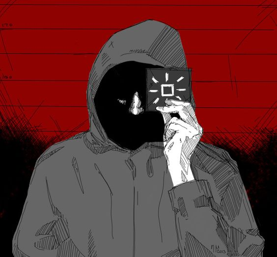

Más buscados
Por dañar y destruir maliciosamente; Posesión de aparatos explosivos en apoyo de un crimen de violencia; intentar destruir y dañar por medios de explosivos edificios y otros bienes del gran estado de Arstrozka.

- Nombre: desconocido
- Líder terrorista de la agrupación EZIC. Es considerado como el hombre más peligroso del mundo.
| descripción | |||||
|---|---|---|---|---|---|
| Alias: | Mensajero | Logo: | Contextura: | Delgada | |
| Altura: | 6´0" (1.80 m) | Fecha de nacimiento: | desconocida | Lugar de Nacimiento: | Kolechia |
| Color de ojos: | desconocida | Peso: | 160 pounds (73 kg) | Sexo: | Masculino |
| Atención: Debe ser considerado armado y peligroso |